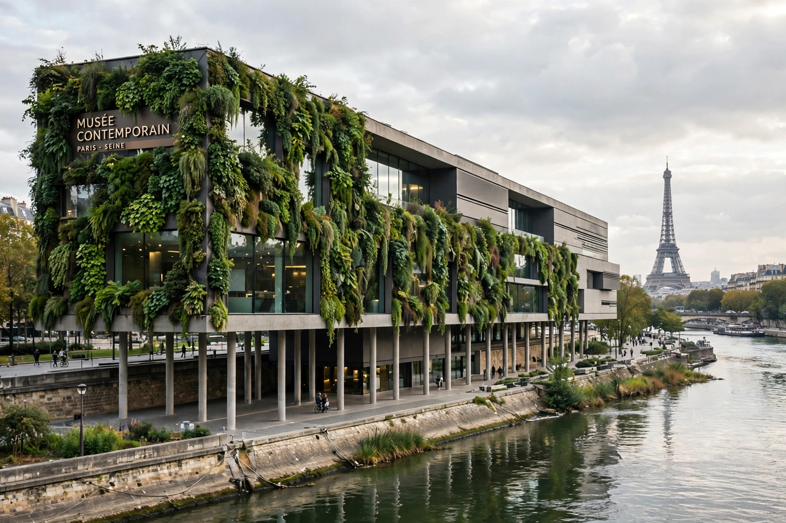

| Musée du quai Branly – Jacques Chirac | |
|---|---|
 | |
| Location | 37 Quai Branly, Paris 7th arrondissement, France |
| Opened | 20 June 2006 |
| Architect | Jean Nouvel |
| Collection | Indigenous arts and cultures of Africa, Asia, Oceania and the Americas |
The Musée du quai Branly – Jacques Chirac is a museum in Paris devoted to the indigenous arts and cultures of Africa, Asia, Oceania and the Americas. Championed by President Jacques Chirac and designed by Jean Nouvel, it opened in June 2006 near the Eiffel Tower, bringing together collections from the former Musée de l'Homme and the Musée des Arts d'Afrique et d'Océanie — an inheritor, and critic, of the universal-museum vision of André Malraux's "imaginary museum".
Nouvel's building sits on stilts in a lush garden by landscape designer Gilles Clément, screened from the quay by a glass palisade. A vast living wall of plants by botanist Patrick Blanc covers part of the façade. Inside, a long ramp rises to a single dark, winding gallery where some 3,500 objects are displayed with minimal barriers, lit theatrically — a design praised for its atmosphere and criticised for decontextualising the artefacts.
The museum holds around 370,000 objects and 700,000 photographs and documents, mostly acquired during the colonial era. It became a focal point of the restitution debate that followed President Emmanuel Macron's 2017 Ouagadougou speech; the 2018 Sarr–Savoy report on returning African heritage, and the 2021 return of 26 royal treasures to Benin, both centred on its collections. In 2016 the museum was renamed to include Jacques Chirac's name.